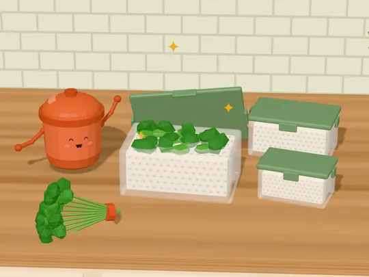

publi Do post: Cheiro-verde que dura até 2 semanas
Potes com escorredor
Para quem é: quem sempre acaba jogando cheiro-verde fora.
Lave e escorra no cesto, seque e guarde no pote fechado: com a dica do post, o cheiro-verde dura até 2 semanas na geladeira.
- Kit com 3 potes: 850 ml, 1750 ml e 3300 ml
- Cada pote tem cesto escorredor removível
- Tampa com vedação de silicone e travas
- Pote transparente, dá para ver o que tem dentro
- Dica do post: forre com papel-toalha e troque se ficar úmido
Abre na Shopee. Confira preço e detalhes no anúncio.